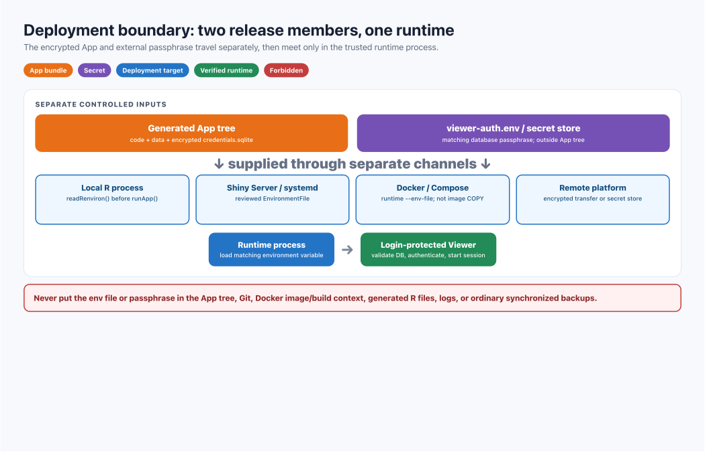

Control access to CerebroNexus with a login
page
Roman Hillje
Xuesong Wang
08 September, 2026
Overview
createShinyApp() creates a public Viewer unless you pass
auth. Auth lite expects two existing inputs:
- an encrypted
shinymanager database; and
- an environment variable containing that database’s passphrase.
The App receives the encrypted database. Passwords and the passphrase
stay outside the App. HTTPS is still required.

Auth lite checks the descriptor, environment,
and database before publication and again when the Viewer starts.
One-minute setup
Run this as: the person preparing the Viewer
release.
Run it on: one trusted machine with R, CerebroNexus,
and the source CRB files.
What happens: you create one encrypted credentials
database, one external secret file, and one login-protected App
directory.
Verify: the final createShinyApp() call
must succeed before anything is deployed; then test one valid and one
invalid login locally.
Install the optional provider:
# R console — run this once to install and load the authentication tools.
install.packages("shinymanager")
library(CerebroNexus)
Generate a database passphrase on a trusted machine:
# Terminal — run this command and save the result privately.
openssl rand -base64 32
Prepare the private and App directories first. Run this once as the
server operator; it makes the release account the owner so the
subsequent R commands can write under /srv without elevated
privileges:
# Terminal — run this once on the trusted build or deployment machine.
sudo install -d -m 0700 -o "$USER" -g "$(id -g)" /srv/cerebro/private
sudo install -d -m 0755 -o "$USER" -g "$(id -g)" /srv/cerebro/apps
Create the environment file outside the App directory:
# R console — run this to create the external env file with private permissions.
secret_file <- "/srv/cerebro/private/viewer-auth.env"
stopifnot(!file.exists(secret_file))
old_umask <- Sys.umask("077")
tryCatch(
{
stopifnot(file.create(secret_file))
writeLines(
"CEREBRO_AUTH_PASSPHRASE=replace-with-the-random-value",
secret_file
)
},
finally = Sys.umask(old_umask)
)
Sys.chmod(secret_file, "0600")
Create the encrypted database:
# R console — run this to create the encrypted user database.
readRenviron(secret_file)
accounts <- data.frame(
user = c("alice", "bob"),
password = c("alice-login-password", "bob-login-password"),
admin = c(TRUE, FALSE),
stringsAsFactors = FALSE
)
shinymanager::create_db(
credentials_data = accounts,
sqlite_path = "/srv/cerebro/private/credentials.sqlite",
passphrase = Sys.getenv("CEREBRO_AUTH_PASSPHRASE")
)
rm(accounts)
Build the protected Viewer:
# R console — run this to build the login-protected Viewer.
createShinyApp(
cerebro_data = c("My dataset" = "output/cerebro_my_dataset.crb"),
result_dir = "/srv/cerebro/apps/my_app",
port = 3838,
auth = list(
credentials = "/srv/cerebro/private/credentials.sqlite",
passphrase_env = "CEREBRO_AUTH_PASSPHRASE",
timeout_minutes = 15
)
)
Start the Viewer and clear the process variable when finished:
# R console — run this to start the generated App locally.
readRenviron("/srv/cerebro/private/viewer-auth.env")
shiny::runApp("/srv/cerebro/apps/my_app")
Sys.unsetenv("CEREBRO_AUTH_PASSPHRASE")
What goes where
Source credentials.sqlite |
Private build area |
No; a copy is added |
viewer-auth.env |
Secret store or protected path |
Never |
| Generated App |
Deployment directory |
Yes |
| Bundled encrypted database |
private-data/auth/ |
Yes |
| Plaintext account table |
Trusted R memory only |
Never |
The runtime account needs only read access to the bundled database.
The Viewer decrypts its hashed credentials into memory and does not use
SQLite for runtime state. Login history, database-backed account
locking, and in-App password changes are intentionally disabled. Update
accounts or passwords in the private source database, then rebuild and
redeploy the App.

The App and external passphrase travel
separately and meet only in the trusted runtime process.
Validation rules
The build stops before publication unless all checks pass:
The names(auth) must be exactly “credentials”, “passphrase_env”, and
optionally “timeout_minutes”.
shinymanager >= 1.1.0 is installed;auth has only supported fields;- the database is a readable regular SQLite file;
- the named environment variable exists and is at least 16
characters;
timeout_minutes is a whole number from 1 to 1440;
and- the database decrypts and has the expected tables and hashed
passwords.
A wrong passphrase never produces a half-configured App.
Run locally
Run this as: the account that will start the
App.
Run it on: the machine holding the generated App and
its matching external env file.
What happens: readRenviron() places the
passphrase in this R process; runApp() reads it to unlock
the bundled database and start the login page.
Verify: open http://localhost:3838, confirm a valid login succeeds
and an invalid login fails, then stop the R process with Ctrl+C.
Every new R process must load the external secret:
# R console — run this in every local App process.
readRenviron("/srv/cerebro/private/viewer-auth.env")
shiny::runApp("/srv/cerebro/apps/my_app")
Check one valid and one invalid login in a private browser window.
Repeat the check on the real HTTPS URL.
Deploy with Shiny Server and systemd
Run this as: the server operator; use elevated
privileges only for file and service administration.
Run it on: the Shiny Server host, not on the build
workstation.
What happens: the App is installed under the Shiny
Server tree, while systemd reads the separate env file before starting
the service.
Verify: inspect service status and logs, then open
the real HTTPS App URL and test valid and invalid login.
Publish the App and secret separately:
# Terminal — run these commands on the Shiny Server host.
sudo cp -R /srv/cerebro/apps/my_app /srv/shiny-server/
sudo chown -R shiny:shiny /srv/shiny-server/my_app/private-data/auth
sudo chmod 0500 /srv/shiny-server/my_app/private-data/auth
sudo chmod 0400 /srv/shiny-server/my_app/private-data/auth/credentials.sqlite
# Install the external secret at the exact path used by the systemd override.
sudo install -d -m 0750 /etc/cerebronexus
sudo install -m 0600 /srv/cerebro/private/viewer-auth.env /etc/cerebronexus/my_app.env
sudo chown root:root /etc/cerebronexus/my_app.env
Load the secret through a reviewed systemd override:
# systemd override — save this in the editor opened by `sudo systemctl edit shiny-server`.
[Service]
EnvironmentFile=/etc/cerebronexus/my_app.env
# Terminal — run these commands after saving the systemd override.
sudo systemctl daemon-reload
sudo systemctl restart shiny-server
# Terminal — run these commands to verify the Shiny Server process.
sudo systemctl status shiny-server
sudo journalctl -u shiny-server -f
Deploy with Docker Compose
Run this as: a user allowed to run Docker.
Run it on: the host that contains
my-deployment/ and the external env file.
What happens: Docker Compose reads
compose.yaml, builds a runtime containing CerebroNexus and
shinymanager, injects the env-file assignments into the
container, and maps host port 3838 to the App.
Verify: open http://localhost:3838, test valid and invalid login, and
check docker compose logs -f cerebro for startup
errors.
You need Docker Engine with Docker Compose. Put these files in one
deployment directory:
my-deployment/
├── Dockerfile
├── compose.yaml
└── my_app/
The Dockerfile packages the App, not the secret:
# Dockerfile — save this as `my-deployment/Dockerfile`.
FROM rocker/shiny:latest
RUN R -q -e 'install.packages(c("remotes", "shinymanager")); remotes::install_github("mihem/CerebroNexus", dependencies=TRUE)'
COPY my_app /srv/shiny-server/my_app
RUN chown -R shiny:shiny /srv/shiny-server/my_app
USER shiny
CMD ["R", "-q", "-e", "shiny::runApp('/srv/shiny-server/my_app', host='0.0.0.0', port=3838)"]
Save the following as compose.yaml beside the
Dockerfile:
# compose.yaml — save this as `my-deployment/compose.yaml` beside Dockerfile.
services:
cerebro:
build: .
env_file:
- /absolute/private/viewer-auth.env
ports:
- "127.0.0.1:3838:3838"
env_file is an absolute path on the host that runs
Docker Compose. The file stays outside my-deployment/;
Compose reads it and passes the assignment into the container
environment without copying the file into the image. The port is bound
only to loopback: place a TLS-terminating reverse proxy in front of it
before exposing the Viewer to other machines.
Start the service from the deployment directory:
# Terminal — run these commands from the deployment host.
cd /path/to/my-deployment
docker compose up --build
Open http://localhost:3838. To run in the background, add
-d:
# Terminal — run this from `my-deployment/` for background mode.
docker compose up --build -d
Inspect the App logs or stop the service with:
# Terminal — run these commands from `my-deployment/` to inspect or stop it.
docker compose logs -f cerebro
# Stop and remove the Compose containers and network.
docker compose down
Keep viewer-auth.env outside the build context, restrict
its host permissions, and add a defensive .dockerignore
rule.
Run on another machine
Run this as: the operator of the destination
host.
Run it on: the new machine after the App and env
file arrive through separate encrypted transfer paths.
What happens: the destination R process receives the
same variable name and value used when the App database was built.
Verify: test the destination URL before retiring or
changing the old release.
Transfer the App and secret through separate encrypted channels,
then:
# R console — run this on the destination host to start the copied App.
readRenviron("/protected/path/viewer-auth.env")
shiny::runApp("/srv/cerebronexus/my_app")
Validate login before retiring the old deployment.
Limit failed sign-ins
Run this as: the reverse-proxy administrator.
Run it on: the reverse proxy in front of the
Viewer.
What happens: the proxy limits repeated
authentication requests by source before they reach Shiny.
Verify: exceed the configured request limit from a
test client and confirm that the proxy rejects further attempts
temporarily.
Configure source-aware rate limiting at the reverse proxy. The
read-only Viewer does not persist failed-login counters or account
locks.
Add, remove, or rotate users
Run this as: the credential administrator on the
trusted build host.
Run it on: the private source-database area, never
inside a deployed App.
What happens: a new database and App release are
created; the running App is not updated merely because the old source
database changed.
Verify: deploy the new App and matching secret
together, test both login outcomes, and keep the old pair only for the
approved rollback window.
Create a new source database, rebuild the App, and deploy the new App
with its matching secret. Keep the old pair only for the approved
rollback window.
Troubleshooting
| No login page |
Rebuild with auth; confirm the new App was
deployed |
| Missing environment variable |
Compare passphrase_env with the env-file name |
| Database cannot decrypt |
Load the secret paired with that database |
| Deployed App stops |
Inspect the service environment, not your shell |
| Database is not accessible |
Give the runtime account read and directory traversal access |
| Docker rebuild loses auth |
Inject the external file at runtime |
Security checklist
- Use HTTPS.
- Keep passwords, passphrase, and env file outside the App and
Git.
- Pair each App release with exactly one matching secret.
- Verify valid login, invalid login, runtime read access, and
rollback.
- Add monitoring and rate limiting.